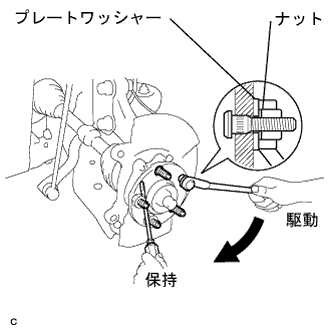

Front Axle Hub Bolt LH Installation |
| 1. Front Axle Hub Bolt LH Installation |
 |
Install a new hub bolt to the front axle hub and, with a plate washer, install the hub bolt by tightening a nut (M12×P1.5mm).
| 2. Install Front Disc |
 |
Align the matchmarks on the disc and axle hub, and install the disc.
| 3. Install Front Disc Brake Caliper Assembly LH |
 |
Install the front disc brake caliper assembly LH to the steering knuckle with the 2 bolts.
| 4. Install Front Tire |